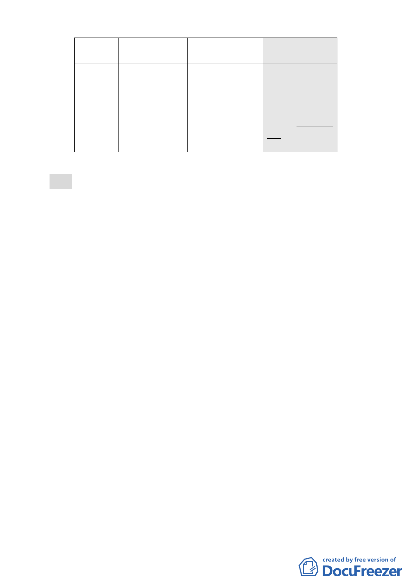

項目
現行計畫
（92.1.7）
公展計畫
（98.12.22）
本次修正內容
（99.6.17）
騎樓、迴廊 本 基 地 北 側 應 留 設 未取消留設規定
擬增訂本計畫區規劃
及無遮簷人 騎樓
於北側留設廣場式開
行道
放空間，故取消應留設
騎樓之規定。
臺北好好看 無
申請適用 2 項容積獎勵 申請適用廣場式開放
獎勵項目
●廣場式開放空間
空間。
●挑空室內開放空間
決議：
一、本案除以下各點應再作修正外，其餘依市府本次所送修正後
計畫書通過。
（一）經徵詢申請單位意見，業表示同意依市府本次會議所提防
範建物違規作住宅使用相關規定辦理，並將相關文字納入
計畫書。
（二）本案有關土地及建物使用管制，依本會第 611 次委員會議
共識，應依照現行計畫規定辦理（92.1.7.公告實施之計
畫）。本次所送修正後計畫書第 6 頁（五）文字有關「新
計畫」1 欄內容所敘及「原計畫允許使用之容積樓地板應達
1/2 以上…」，將造成計畫文字解讀錯誤，不符合本會通過
之共識，文字請直接修正為「有關土地及建物使用管制，
依 92.1.7.公告實施之計畫規定辦理」以免誤解。
（三）修正後計畫書第 9 頁，有關騎樓、迴廊及無遮簷人行道規
定，請直接移列至第 11 頁柒、都市設計準則予以規定，文
字請修正為「本案配合臺北好好看，將廣場式開放空間留
設於計畫區北側，得不受 92.1.7.公告實施計畫案內有關北
側應留設騎樓之規定」，或敘明「有關騎樓、迴廊及無遮
簷人行道之設置，依圖三規定辦理」。
（四）修正後計畫書第 10 頁二、其他，計畫書文字請比照已公告
實施之臺北好好看案例，刪除「（如附件一）」，並增列
「實際容積獎勵額度，由臺北市都市設計及土地使用開發
許可審議委員會依本案所規劃之開放空間，審酌其必要
性、開放性及公益性，就實際面積再核予容積獎勵額度」。
- 49 -